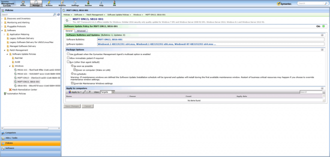

I’m was working on a Patch Management Workflow and wanting to get the bulletins contained in a Policy created from the Patch Web Service.
There is a Software Bulletins field which showed the list.
| Software Bulletins | MSFT-DN13, SB16-001 |
|---|

If you export the XML of the Policy you can see the Associated Bulletins as an array.
<item classGuid="{49fe4304-e09d-4382-9026-715868ffb856}" guid="{4babbaac-b8e8-4895-8c38-a8e7f558a7ef}">
<!-- Type: Altiris.PatchManagementCore.Policies.SoftwareUpdateAdvertismentSetPolicy -->
<softwareBulletinPolicy>
<associatedbulletins>
<associatedbulletin>418ff377-63ec-4d16-a3a2-2a7c4bfdfd35</associatedbulletin>
<associatedbulletin>91667244-3aea-42b0-adf6-7fdb85308abf</associatedbulletin>
</associatedbulletins>
<softwareBulletinPolicy>
There are Web Services to export Items from the SMP but then you'd need to save this file and parse it.
As an alternative this information is stored in SQL, it is in the State column.
SQL
SELECT State FROM vItem WHERE Guid = '4babbaac-b8e8-4895-8c38-a8e7f558a7ef'
To retrieve this from SQL you will need to perform the following:
SQL
DECLARE @myDoc xml
SET @myDoc = (SELECT State FROM vItem WHERE Guid = '4babbaac-b8e8-4895-8c38-a8e7f558a7ef')
SELECT node.value('.','uniqueidentifier') AS AssociatedBulletins
FROM @myDoc.nodes('(/item/softwareBulletinPolicy/associatedbulletins/associatedbulletin)') AS PE(Node)
* Replace the following Guid with the Policy Guid you wish to retrieve information from.
Output
| AssociatedBulletins |
|---|
| 418FF377-63EC-4D16-A3A2-2A7C4BFDFD35 |
| 91667244-3AEA-42B0-ADF6-7FDB85308ABF |
Web Services
https://localhost/altiris/patchmanagementcore/patchworkflowsvc.asmx
If you want more information about the value method and parsing XML in SQL check out the MS Article:
value() Method (xml Data Type)
https://docs.microsoft.com/en-us/sql/t-sql/xml/value-method-xml-data-type
(https://msdn.microsoft.com/en-us/library/ms178030.aspx)